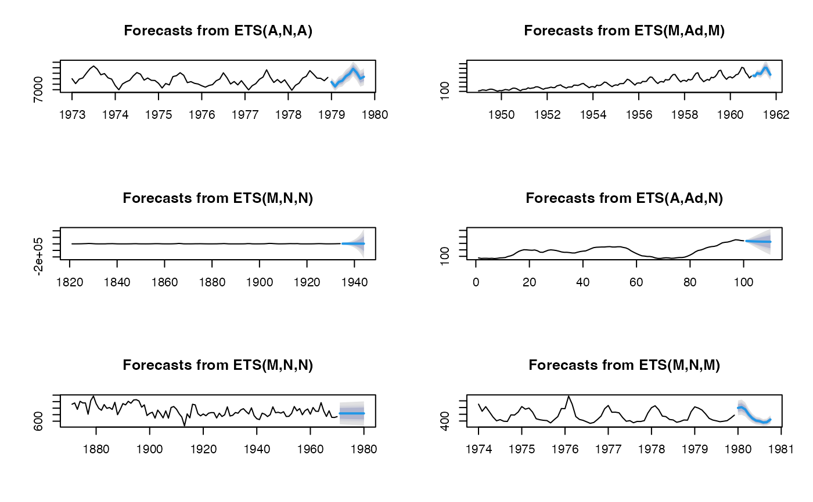

eatf.Rdcombined ets, arima, and theta (eat) forecasting
a univariate time series
number of periods for forecasting
confidence levels for prediction intervals
forecasting method: "E": forecast::ets;
"A": forecast::auto.arima; "T": forecast::thetaf;
or "EAT" for the combination of the three methods (with weights)
weights of each method, in method 'EAT'
additional parameters to be passed to forecast::ets,
forecast::auto.arima, forecast::thetaf and
forecast::forecast
a list with point forecasts and prediction intervals; returns
from forecast::ets, forecast::auto.arima,
forecast::theta, only point forecasts for eat
mean point forecasts as a time series
ensemble forecasts obtained from forecast::ets,
forecast::auto.arima and forecast::theta
require(forecast)
#> Loading required package: forecast
#>
#> Attaching package: ‘forecast’
#> The following object is masked from ‘package:after’:
#>
#> is.constant
print(eatf(WWWusage, method = "EAT",
weights = c(0.5, 0, 0.5)))
#> Point Forecast Lo 80 Hi 80 Lo 95 Hi 95
#> 101 219.3380 213.8856 222.8471 211.5136 225.2190
#> 102 218.8270 207.7611 226.3090 202.8518 231.2183
#> 103 218.4393 201.4969 230.4034 193.8458 238.0544
#> 104 218.1519 195.2867 234.8452 184.8162 245.3157
#> 105 217.9463 189.2333 239.4575 175.9398 252.7510
print(eatf(WWWusage, method = "EAT"))
#> Point Forecast Lo 80 Hi 80 Lo 95 Hi 95
#> 101 219.1855 213.8856 222.8471 211.5136 225.2190
#> 102 218.6022 207.7611 226.3090 202.8518 231.2183
#> 103 218.1858 201.4969 230.4034 193.8458 238.0544
#> 104 217.8916 195.2867 234.8452 184.8162 245.3157
#> 105 217.6877 189.2333 239.4575 175.9398 252.7510
print(eatf(WWWusage, method = "T"))
#> Point Forecast Lo 80 Hi 80 Lo 95 Hi 95
#> 101 220.3096 212.8385 227.7808 208.8835 231.7357
#> 102 220.6190 210.0538 231.1843 204.4609 236.7772
#> 103 220.9284 207.9889 233.8679 201.1392 240.7177
#> 104 221.2378 206.2967 236.1789 198.3873 244.0883
#> 105 221.5472 204.8426 238.2518 195.9997 247.0947
obj <- eatf(WWWusage, method = "EAT",
weights = c(0, 0.5, 0.5),
ci = "T")
plot(obj)
obj <- eatf(WWWusage, method = "EAT",
weights = c(0, 0.5, 0.5))
plot(obj)
par(mfrow=c(3, 2))
plot(eatf(USAccDeaths, h=10, level=c(80, 90, 95, 99)))
plot(eatf(AirPassengers, h=10, level=c(80, 90, 95, 99)))
plot(eatf(lynx, h=10, level=c(80, 90, 95, 99)))
plot(eatf(WWWusage, h=10, level=c(80, 90, 95, 99)))
plot(eatf(Nile, h=10, level=c(80, 90, 95, 99)))
plot(eatf(fdeaths, h=10, level=c(80, 90, 95, 99)))
